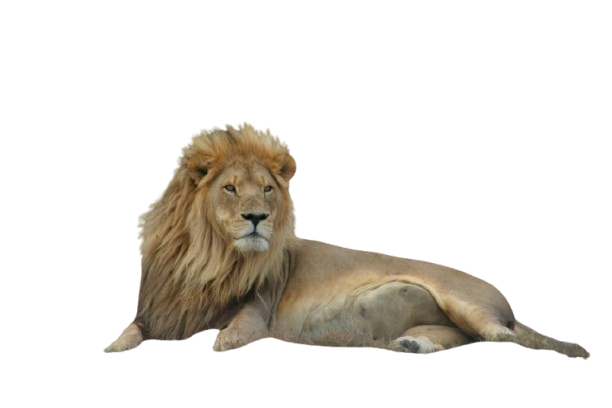
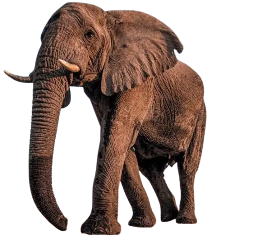
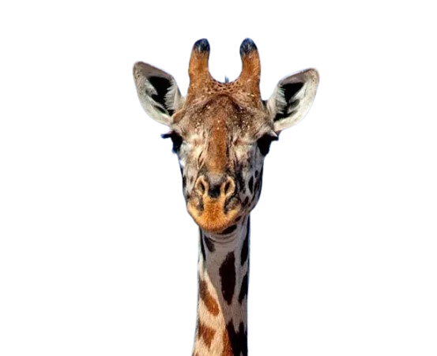

בעלי חיים
אריה
האריה נפוץ בעיקר ביבשת אפריקה, אך גם במדינת גוג'ראט שבהודו. הוא ניזון מאוכלי עשב שונים אותם הוא צד, וכן מפגרים. בתרבות האנושית נחשב האריה סמל לגבורה וכוח, ולכן הוצמד לו הכינוי "מלך החיות".


פיל הוא מונח לקבוצה פוליפילטית של שלושה מיני יונקים – פיל סוואנה אפריקני, פיל יער אפריקני ופיל אסייתי – שהם חיות היבשה הגדולות ביותר בעולם והמינים היחידים ששרדו במשפחת הפיליים.

לג'ירף רגליים וצוואר ארוכים מאוד. גובה כתפיו כ-3 מטרים מעל הקרקע וגובה ראשו כ־5.3 מטר מעל פני הקרקע. צבעו חום-צהוב עם כתמים כהים וגדולים. צבע זה משמש לו בתור הסוואה מאויביו.